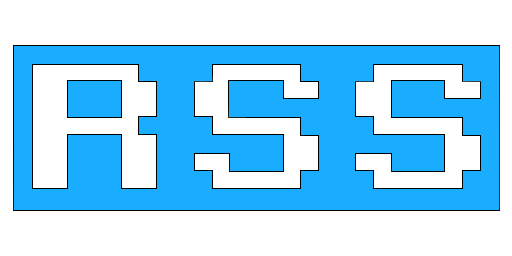

MICHAEL ROSACK
ROSACK SOFTWARE SOLUTIONS,
LLC
W6683
Spring Green Place, Greenville, WI 54942 - P: 920-246-9152 - E:
mike@rosacksoftwaresolutions.com
SUMMARY
Experienced Solutions Architect with a proven track record of
creating scalable, reliable systems from the ground up.
QUALIFICATIONS
20 years of experience in the software development industry. Fluent
in many languages and operating systems, and able to learn new ones
quickly.
- Deep experience with all types of Javascript development, from
Angular/React front-end dev to GraphQL and other server-side Node
technologies. Well versed in .NET development in a former life, also
very familiar with the Java and Unix worlds.
- Enthusiastic about designing systems - building object models, data
stores and user interfaces to create intuitive, scalable solutions.
- Excellent communication skills - Ability to work with customers to
flesh out requirements and build a product that meets their needs and
exceeds their expectations.
PROJECT WORK as
ROSACK SOFTWARE SOLUTIONS, LCC
Breakthrough
Fuel
- Green Bay, WI - August 2020 to
Present
-
ZeroMe
: Worked on API, web portal and mobile
application for
zerome.com
. The
portal and mobile app were developed in React, using React Native and
Expo on mobile. The API is graphql-based with an Azure CosmosDB backend.
The project has a dynamic question metadata solution for calculating
user carbon emissions which I was heavily involved in.
-
AskFELIX.com
: Brought in near the end of
development for
AskFELIX.com
, a
rewrite of Breakthrough’s main customer-facing application. I lead the
development of an updated pricing system to take over from a bunch of
manual legacy processes that had yet to be replaced in the new platform.
I was also investigating integration of alternative fuels into the
platform as part of the pricing process. All development was in
Node/React/GraphQL with a PostgreSQL database in the Google cloud.
Greatland
Corporation
- Green Bay, WI - Feb 2018
to Feb 2021
Modernized
yearli.com
to run in the Azure
cloud instead of on premises. My main focus was on the form validation
engine/UI - the main concern was being able to have a highly functional
UI that could run the same full validation that was done on the backend.
We developed a custom metadata solution to create the business logic and
transpiled the validation engine to Javascript using bridge.net.
American
Airlines / PSA Airlines
- Dayton, OH -
June 2017 to Present
Developed various line of business apps to digitize manual
processes.
-
Planning Validator
: Utility web application for
plane maintenance staff to schedule maintenance for the fleet. ASP.NET
Web API backend deployed through Azure Functions with an Angular
frontend.
-
Crew Mobile
: Crew Scheduling mobile app used by
pilots to arrange assignments, vacations, and other requests. ASP.NET
Web API backend deployed through Azure Functions with a Xamarin frontend
deployed to iOS and Android.
-
Electronic Dispatch Release
: Web app used by pilots
to review flight dispatch information and approve it without manually
printing and signing the release. ASP.NET Web API backend with an
Angular frontend.
Play Your Damn Turn
Asynchronous multiplayer (Play by Email) turn broker for Civilization
6. Allows users to play games of Civilization 6 at a relaxed pace
without all players having to be online at the same time.
https://www.playyourdamnturn.com
- Backend built using the Serverless Framework and deployed to AWS
Lambda, making it both highly scalable and cheap to run.
- Angular UI for both the website and a client desktop application
that assists with uploading/downloading turn files.
- Electron client application allowing cross-platform deploys to
Windows, OS X and Linux.
Volt Stats
Online statistics tracking for Chevrolet plug-in vehicles like the
Volt and Bolt.
http://www.voltstats.net
- Backend system interfaces with the Onstar partner API to pull data
from registered users’ vehicles twice daily.
- Data is aggregated and analyzed, allowing users to track their fuel
efficiency, earn achievements for meeting driving milestones, and
compete with other users for bragging rights!
- ASP.NET MVC website with heavy usage of jqPlot and d3.js for data
visualization and DataTables for dynamic grids.
PROJECT
WORK through OMNI RESOURCES
-
Appleton, WI - 2011 to 2017
Dodles, Inc – Social Drawing
Startup
A cross-platform (web/iOS/Android) application aiming to be a leader
in social drawing and animation.
- Assisted in designing a large AWS backend architecture using NodeJS
on Beanstalk, ECS, Aurora, S3, ElasticSearch and ElastiCache. Backend
was designed to accommodate millions of active users.
- Architected cross-platform drawing engine using libGDX that could
compile to all 3 platforms. Dove deep into libGDX internals, especially
for the HTML targeting, which required detailed knowledge of the Java
-> Javascript/WebGL transpilation process using GWT.
- Designed Angular 1 web frontend to host the social portion of the
application.
Miller
Electric - Insight Core Cloud Reporting Solution
A Windows Azure based application that allows companies to analyze
the usage of their welding equipment to increase quality and efficiency.
https://insight.millerwelds.com/
- Built scalable SQL Azure cloud service to listen for messages coming
in from devices in the field and queue them for processing.
- Developed a SQL Azure worker role based data warehouse that
processed the messages queued by the front end service in near-real
time, analyzed them, and stored them for reporting. Used a highly
customized version of Entity Framework for data access.
- Created ASP.NET MVC frontend that allowed users to configure their
devices and view reports. The frontend relied on many open source
libraries such as Twitter Bootstrap for the general HTML framework,
Highcharts for reporting and Datatables for sortable, interactive
grids.
EDUCATION
B.S., Computer Science
- Georgia Tech - Atlanta, GA
- 2004
CERTIFICATIONS


ACTIVITIES AND INTERESTS
Electric vehicles, 3D printing, golf, MythTV, fantasy sports,
traveling and good food!